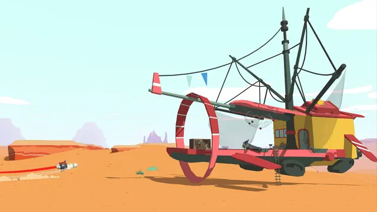
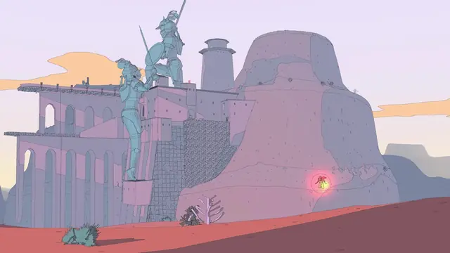
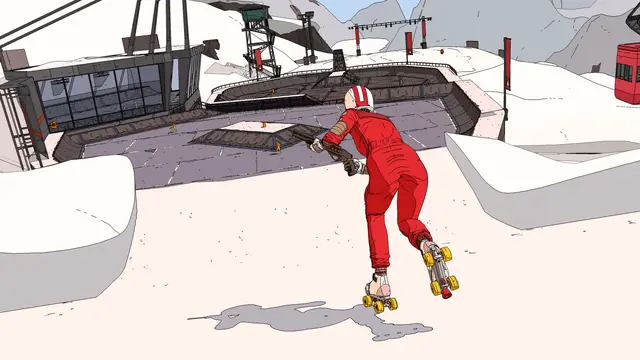
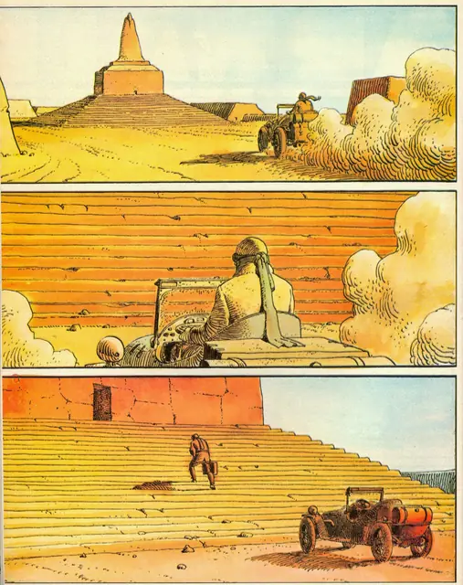
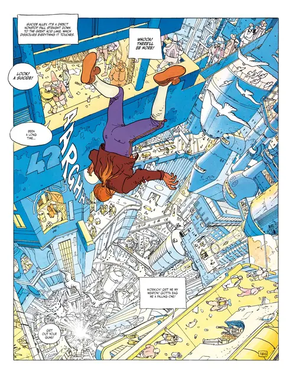
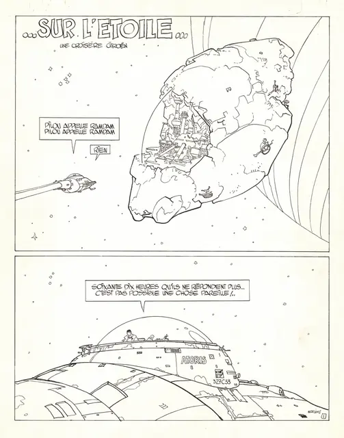
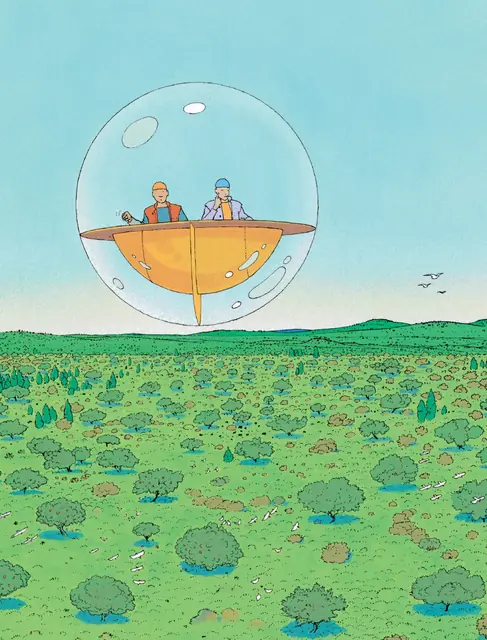
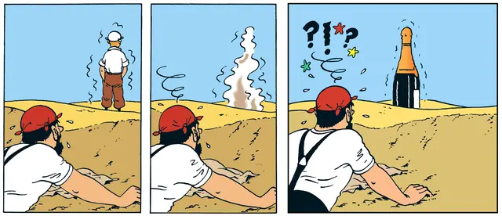
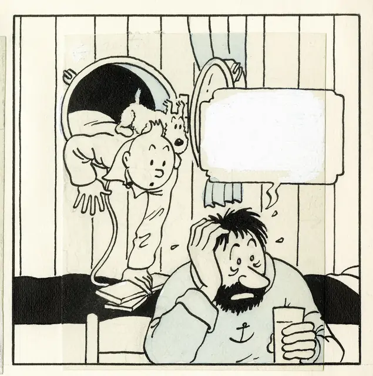
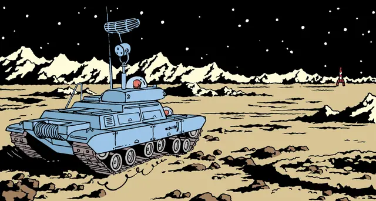

The feel
Ligne claire puts clarity first. Figures, objects and backgrounds share one precise outline, stripped of superfluous rendering or shading, and the pages read so clearly that many children have followed the story before they could read the words.1 Hergé came to see the biggest difficulty in comics as showing "exactly what is necessary and sufficient to understand the story; nothing more, nothing less".1
Moebius's science fiction adds silence and space. He made Arzach wordless on purpose, calling it "intentionally provocative", and said "the silence was part of that mystery".2 Miyazaki says that even today he admires Moebius's sense of space,3 and Sable aims the same look at "a sense of curiosity, wonder and existential loneliness".4
- clear
- precise
- silent
- spacious
- lonely
- sunlit
Where it comes from
Hergé began Tintin in January 1929 and settled on his line in the first instalments of The Blue Lotus in 1934.1 Colour came last: from 1942 Hergé cut the albums down to 62 pages in full colour, and with the input of Edgar P. Jacobs, hired in 1944, he arrived at a system of flat colours.1 Joost Swarte named the style klare lijn, the clear line, for a 1977 exhibition on Hergé's work.5 Jean Giraud, as Moebius, co-founded Métal Hurlant and made experimental science fiction such as the wordless Arzach (1975), and his switch from brush to pen gave more open drawings influenced by the clear line.6 Miyazaki first saw Arzach in 1980, found it a shock, and says he directed Nausicaä under Moebius's influence.3 Shedworks built Sable (2021) on "Belgian and French 'ligne claire' comics from the likes of Moebius".7
Core elements
One line weight for every form
Figures, objects and backgrounds get the same precise outline, stripped of superfluous rendering or shading.1 The 1977 exhibition that named the style picked out a thin, fixed line weight that gives form both volume and detail.5 It was born of necessity: newspaper ink tended to spread, so Hergé kept his lines thin, bright and clean.8
Flat colour fills
Hergé refused half-tones, gradations and shading, holding that the line "formed the true structure of his work".1 Colour fills the outlined areas flat, and careful colour, not shading, gives depth and visual focus.1,5 In 3D, Sable starts from flat shading, then lets light and cast shadows back in so players can see where they sit on a surface.9
Iconic figures on realistic backgrounds
Scott McCloud says the clear line "combines very iconic characters with unusually realistic backgrounds", letting readers "mask themselves in a character and safely enter a sensually stimulating world".1 From The Blue Lotus on, Hergé visited museums, consulted experts and studied photographs, and every drawing had to look believable and technically accurate.8
Storytelling through images
Clarity of line supports clarity of storytelling, carrying the reader's mind and eye from panel to panel.5 Moebius went further: Arzach has no balloons, captions or sound effects,6 and as he put it, "without words the meanings come directly from the images, characters and landscapes".2
Empty desert landscapes
Moebius had a talent for strange and desolate landscapes, and eight months in Mexico from 1955 had shown him "the mysterious allure of the desert".6 Sable's look reflects the relative emptiness of the desert, and the landmarks you orient by stand out on purpose.4
Believable invented worlds
Jusant's art director, Edouard Caplain, puts the Moebius lesson simply: "Moebius built a world that doesn't exist, but you can understand it. It's a realist world."10 Moebius's landscapes pair washes of contrasting colour with impossibly huge structures of soaring rock.10
How to do it
Ink over a loose pencil sketch
Hergé chased the one right line through a storm of sketches, then cooled the drawing down with a tracing, keeping only the lines with the most movement, readability and clarity.1 Igor Wolski prints his finished sketch in very light blue and inks over it with Uni PIN Fine Line pens from 0.05 to 1.0 mm.11 Where the clear line holds one fixed weight, his only rule is a thicker line for anything nearer the viewer.5,11 He scans at 600 dpi in pure black and white, for hard, pure black lines with no anti-aliasing.11
Put line and colour on separate layers
Hergé's system laid flat colour on a second board, printed with the line in non-reproductive blue, and the black line went over it at the press.1 Digitally, Wolski moves the lines he wants to colour, such as the background, light sources and patterns, onto their own layers and leaves the black ones intact.11
Paint flat colours and shadows
Use flat, simple colours with no gradients or textures, keep the palette close, and save contrasting colours for the main characters and key objects.11 Wolski paints each shadow as one flat colour on a semi-transparent layer, usually the colour opposite on the colour wheel.11 Hergé kept to a light pastel palette so the black line would stand out.1
Draw 3D outlines from depth and normals
Render depth and normals and run an edge filter over both: depth gives the outer silhouettes, normals the inner lines.12 Roystan's outline shader takes a Roberts cross of diagonal pixels in each buffer: a depth edge needs the result, times 100, to pass 1.5 times the pixel's depth, and a normal edge needs it to pass 0.4.13 He combines the two with max, sets the line width in whole pixels and finishes with SMAA at High.13 For still renders, set the line in pixels, or scale it with the image height, 1.0 at 480 px tall and 2.0 at 960 px, so the weight holds at any size.14
Use hatching sparingly
Hergé's clear line stops at flat colour.1 For Moebius, Heckel's post-process hatches only the dark areas, denser as they get darker, with 2 black pixels in every 8, and draws highlights as plain white spots with an outline.12 Sable keeps such extra lines to some environments, where gridded lines add perspective and texture.9
Add light, fog and fading outlines
Sable's team found its flat-shaded world hard to read in depth, so each frame is built in layers: flat shading, then light and cast shadows, distance fog tuned per biome, and outlines that fade as they recede, which also disguises distant objects as they fade in.9 Its creative director counts distance gradients among the most important parts of the style.7
Check each asset in the game
Sable's post-processing can't be reproduced in its modelling program, so Gregorios Kythreotis never knows how an asset will look until it is in the engine. He blocks out each space in the engine and links the model to it, so every change shows in the game at once.7 For promotional art he draws the line work with basic gel pen or fine-tip brushes, with smoothing on, to match the in-game line.7
Cheat sheet
- Line
- One thin, fixed weight around every form5
- Colour
- Flat fills in a light pastel range, so the line stands out1
- Shadow
- One flat colour on a semi-transparent layer11
- Pens
- Wolski: Uni PIN Fine Line 0.05 to 1.0 mm, varied only with distance11
- Scan
- 600 dpi, pure black and white11
- Line scaling
- With image height: 1.0 at 480 px tall, 2.0 at 960 px14
Do
- Plan each crowded frame for the eye: decide what pops and what hides in the background, since any element can carry information.11
- Test the palette early by blocking the picture into large colour groups, by position and role, before laying the final flats.11
- Make the player cast a shadow as often as possible. Sable added a shadow to the moonlight so players stay readable on the ground.9
- Leave room between landmarks. Sable treats its dunes as a sea and its locations as islands, so the spaces in between can breathe.9
- Try telling it without words. Moebius left all dialogue out of Arzach, so the meanings come directly from the images, characters and landscapes.2
Avoid
- Soft gradients and textured fills. Wolski keeps his colour flat, with no gradients or textures, to balance the line work.11
- Flat-shaded 3D with no depth cues. Sable's team found reading depth a big issue and answered it with layers of light, fog and lines.9
- Lines that pop in at a distance. Before Sable faded its outlines with distance, objects just popped in, which its creative director calls ugly and a real problem.9
- Realistic rendering that buries the line. Spielberg's CGI Tintin put the story first and lost Hergé's drawing style.5
- Displacing terrain in a vertex shader without updating the normals pass. The edge filter then sees a flat plane and misses the lines across the dunes, so Heckel gave the ground its own normal material.12
Tools and tutorials
- Unity Outline Shader Tutorial
Roystan's edge detection from the depth and normals buffers, written for Unity 2018.3's post-processing stack.13
- Moebius-style post-processing and other stylized shaders
Maxime Heckel's three.js pass, with Sobel outlines, crosshatched shadows and specular.12
- Moebius-style 3D Rendering
Useless Game Dev takes the style apart and rebuilds each piece in Unity.12
- Blender Manual: Freestyle
Blender's line renderer. Set the line in pixels, or relative to the image height.14
- How to draw in the Tintin art style using Photoshop
Igor Wolski's ligne claire workflow, from a sketch printed in light blue to flat shadows.11
- How to mix Procreate and Unity to create Moebius-inspired game art
Sable's creative director on whiteboxing, line work and distance gradients.7
Palette
Sampled from Hergé's The Crab with the Golden Claws and Explorers on the Moon, Moebius's Arzach and The World of Edena, and Sable. Click a colour to copy its hex code.
Feel the vibe
More references











Games
- Tintin in Tibet
A platformer that closely follows Hergé's album. Study how its sprites and backgrounds keep the comic's look: a reviewer calls the visuals its one outstanding element, with the comic's art captured brilliantly.15
- Sable
Built by a two-person studio on ligne claire comics.7 Study how fog and outlines that fade with distance keep its flat-shaded desert readable.9
- Rollerdrome
Its lead artist took Moebius and Hergé as models and set rules: a black outline of constant width around everything, shadows included, flat shading and no gradients, ever.16
- Chants of Sennaar
Study its muted pastels, visible black lines and subtle hatching, which one reviewer calls a European comic-book look.17
Film, art and more
- The Adventures of Tintin
Where the clear line comes from. Hergé settled on his line in The Blue Lotus.1
- Blake and Mortimer
Edgar P. Jacobs brought exacting detail in settings, props, vehicles and costume to Tintin,1 then launched this series in the first issue of Tintin magazine.8
- Arzach
Moebius's wordless stories of a silent warrior riding a pterodactyl-like creature over strange, desolate land.6
- The Airtight Garage
Moebius improvised it in instalments, so the reader watches the story being invented.6
- The Incal
Moebius and Alejandro Jodorowsky's saga, serialised in Métal Hurlant from December 1980.6 Its opening panel, John Difool thrown from a high-rise overpass, reads as a blueprint for how Gravity Rush plays with height.18
- Nausicaä of the Valley of the Wind
Miyazaki found Arzach in 1980 and says he directed Nausicaä under Moebius's influence.3
- Is That All There Is?
Joost Swarte, who named the clear line, reanimates it with ironic, subversive comics.5
Sources
- 1Hergé & The Clear Line: Part 1
- 2How Moebius revolutionised comic art (page 2)
- 3A talk between Hayao Miyazaki and Moebius
- 4Sable: Exploration Through Line-Art.
- 5Is That All There Is?
- 6Jean Giraud (Moebius, Gir)
- 7How to mix Procreate and Unity to create Moebius-inspired game art
- 8Hergé (Georges Remi)
- 9How Shedworks refined the art of Sable in pursuit of readability
- 10How Jusant tells its history through art instead of dialogue
- 11How to draw in the Tintin art style using Photoshop
- 12Moebius-style post-processing and other stylized shaders
- 13Unity Outline Shader Tutorial
- 14Freestyle: Render Properties
- 15Tintin in Tibet
- 16Curating the gritty, retrofuturistic art direction of Rollerdrome
- 17PC Review - 'Chants of Sennaar'
- 18Gravity Rush carries on the artistic legacy of Jean “Moebius” Giraud